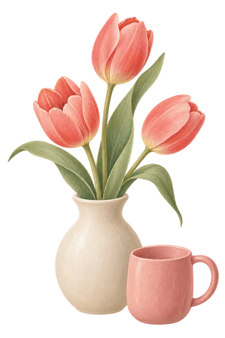

你的主要模式
关系内耗小测试
12道题，看见你最容易被哪种关系循环消耗

选最接近你第一反应的答案，不用寻找“正确选项”。
- 01 每次只选一个最符合的反应
- 02 完成约需 2 分钟
- 03 结果会给出对应的行动建议
第 1 题 / 12
8%
你的第二倾向
先从这 3 步开始
给自己的一句边界提醒
结果描述的是你在当前关系情境中更常出现的反应，不代表固定人格，也不判断关系中谁对谁错。
12道题，看见你最容易被哪种关系循环消耗

选最接近你第一反应的答案，不用寻找“正确选项”。
第 1 题 / 12
8%
你的主要模式
你的第二倾向
结果描述的是你在当前关系情境中更常出现的反应，不代表固定人格，也不判断关系中谁对谁错。